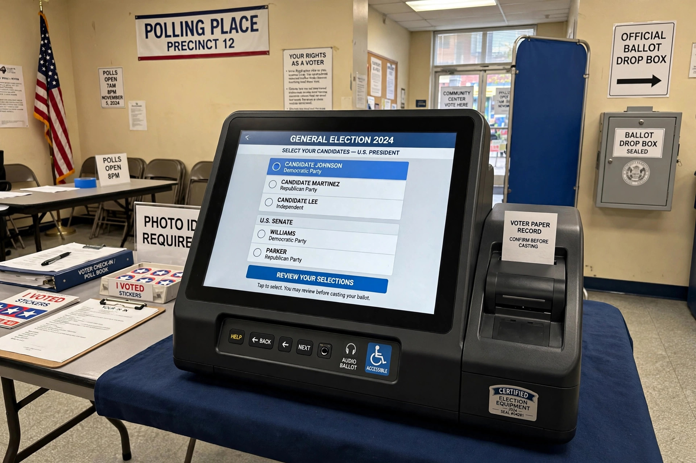

Voting machine

A voting machine is a machine used to record votes in an election. Early devices were mechanical lever machines; modern systems are typically electronic voting machines (EVMs), direct-recording electronic (DRE) systems, or optical scanners that read marked paper ballots.
Types
Lever machines, used widely in the United States from the 1890s, recorded votes on mechanical counters as voters pulled levers beside candidate names. Punch-card systems (such as the Votomatic) became notorious after the 2000 US presidential election for "hanging chads". DRE machines present a touchscreen or button interface and store votes electronically. Optical scan systems count hand-marked paper ballots, preserving a physical record. India's EVMs, used nationwide since 2004, are standalone battery-powered units without network connections.
Security and auditing
Computer scientists have long debated the security of paperless DREs, arguing that software errors or tampering could alter results undetectably. The common response is the voter-verified paper audit trail (VVPAT) and post-election risk-limiting audits, in which hand counts of random ballot samples are compared with machine totals.
Adoption debates
Some countries, including the Netherlands and Germany, moved away from electronic voting after court rulings or security demonstrations emphasised the need for public verifiability, while others continue large-scale use with paper trails.
See also: Secret ballot, Ballot box, Election monitoring.